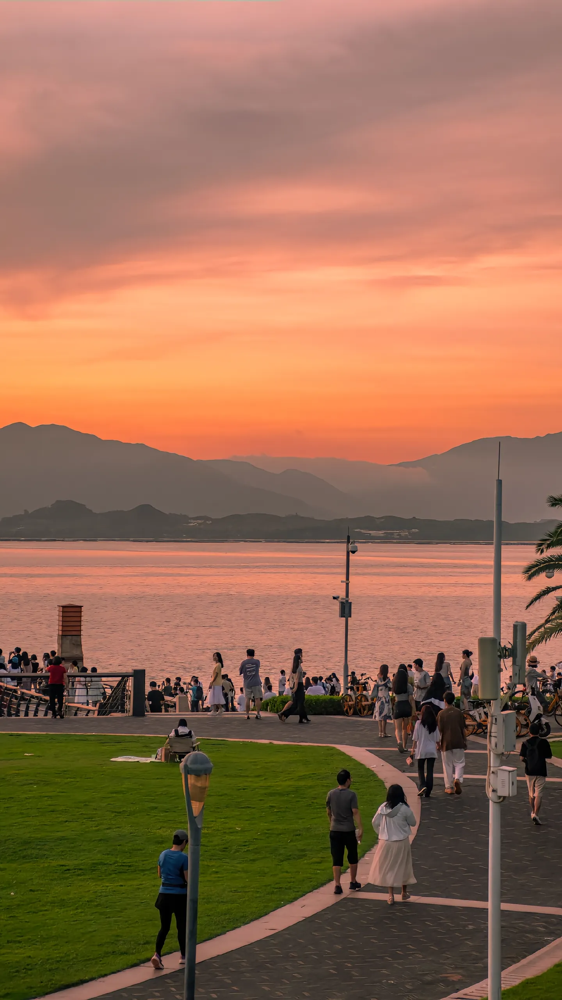

Calm Breeze
“最好看的，可能是太阳出来以前。”
主持人
先聊聊你拍日出的经历吧。拍这种照片主要靠运气，还是会提前查好时间和天气？
Calm Breeze
这次拍的是日出。日出肯定要提前准备，至少要先查清楚每天的日出时间。如果去晚了，太阳已经出来，那个感觉可能就没那么好看了。
主持人
所以你不会卡着日出时间到，而是会更早一点？
Calm Breeze
对，一般提前二十分钟左右。其实日出的过程没有那么长，反而是太阳出来之前那一段蓝调时间最好看。
主持人
真正重要的不只是“太阳几点出来”，还有日出前那一段光线变化。
Calm Breeze
是的。最好能告诉我蓝调从什么时候开始、建议几点到达。先找好地点，再定好时间，别去得太晚。